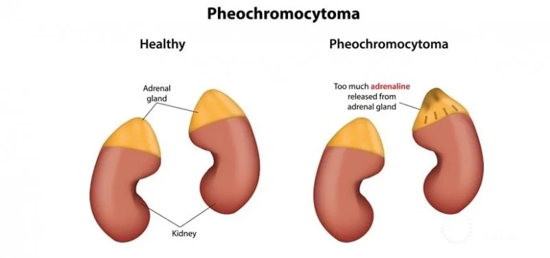
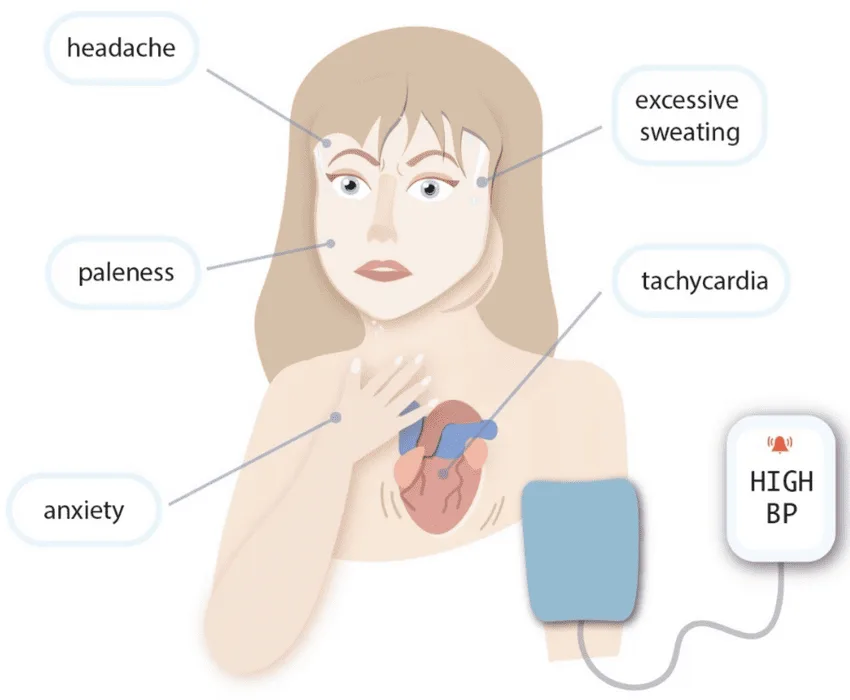

Expanded Nursing Uganda Explanation
Pheochromocytoma should be understood beyond a short definition. Link the concept to patient history, focused assessment, common risks, nursing priorities, documentation and evaluation of outcomes.
01 Pheochromocytoma
Pheochromocytoma is a tumor that produces excessive amounts of catecholamines , including adrenaline ( epinephrine ) and noradrenaline ( norepinephrine ).
Pheochromocytoma is a type of neuroendocrine tumor that grows from cells called chromaffin cells . These cells produce hormones needed for the body and are found in the adrenal glands.
It is usually benign but can be malignant in some cases.
Pheochromocytomas can occur at any age but are commonly diagnosed in adults between the ages of 30 and 50.
02 Pathophysiology
Pheochromocytomas arise from chromaffin cells , which are specialized cells in the adrenal medulla that produce and release catecholamines into the bloodstream. In pheochromocytoma, there is uncontrolled and excessive secretion of catecholamines, leading to episodic or sustained hypertension(high blood pressure). The excess catecholamines can stimulate adrenergic receptors in various organs and tissues, resulting in a wide range of symptoms.
Effects on Blood Pressure:
Catecholamines have potent effects on blood vessels and the heart. They can cause vasoconstriction , leading to elevated blood pressure. They can increase heart rate and cardiac contractility, further contributing to elevated blood pressure.
03 Clinical Presentation of Pheochromocytoma
Pheochromocytomas can cause a variety of symptoms, often due to the excessive release of catecholamines (epinephrine and norepinephrine). These symptoms can be sporadic or persistent.
Common Signs and Symptoms:
- Headaches : Often severe and can be throbbing.
- Sweating ( Hyperhidrosis ): Profuse and generalized sweating episodes.
- Tachycardia : A rapid or racing heartbeat. Palpitations may also be present.
- Hypertension : High blood pressure, which can be sustained or occur in sudden spikes (paroxysmal hypertension).
- Pallor : A pale face, often accompanying episodes of high blood pressure.
- Nausea and Vomiting : Feeling sick to the stomach.
- Anxiety and Panic : Feelings of intense anxiety, nervousness, and impending doom.
- Tremor : Shakiness or trembling, often in the hands.
- Agitation : Feeling restless, irritable, and uneasy.
- Chest Pain or Discomfort : May mimic angina.
Less Common Symptoms:
- Visual Disturbances : Blurred vision.
- Abdominal Pain: Less frequent, but possible.
- Constipation : Due to the effects of catecholamines on the digestive system.
- Weight Loss : Unexplained weight loss can occur.
- Hyperglycemia : High blood sugar.
- Orthostatic Hypotension : Drop in blood pressure upon standing.
- Seizures : In rare cases, very high blood pressure can lead to seizures.
04 Diagnosis and Investigations:
History and Physical Examination : A careful medical history, focusing on symptom onset, duration, and severity, is crucial. Physical examination may reveal signs of hypertension, tachycardia, and tremor.
Biochemical Testing :
- Plasma and Urine Catecholamine Levels : Measurement of epinephrine, norepinephrine, and metanephrines (breakdown products of catecholamines) in plasma and urine is the primary diagnostic tool.
- Plasma Free Metanephrines : This test is highly sensitive and specific for pheochromocytoma.
Imaging Studies :
- Abdominal Computed Tomography (CT) Scan : Used to visualize the adrenal glands and identify any tumors.
- Magnetic Resonance Imaging (MRI) Scan : Provides detailed anatomical images, particularly helpful in differentiating tumors from other adrenal masses.
Genetic Testing: Recommended in cases with a family history of pheochromocytoma or associated genetic syndromes.
How the tumor affects the adrenal glands The adrenal glands make the hormones adrenaline and noradrenaline, which are released into the bloodstream when needed. These hormones control heart rate, blood pressure and metabolism (the chemical processes that keep your organs working).
A phaeochromocytoma can cause the adrenal glands to produce too much of these hormones, which often results in problems such as heart palpitations and high blood pressure.
05 Management of Pheochromocytoma
Aims of management
The primary goals of managing pheochromocytoma are;
- to control symptoms
- stabilize blood pressure
- ultimately remove the tumor.
1. Pre-operative Management (Medical Management)
Alpha-Adrenergic Blockers : These are the cornerstone of pre-operative management.
- Mechanism : Alpha-blockers (e.g., phenoxybenzamine, doxazosin, prazosin) block the effects of norepinephrine on blood vessels, preventing vasoconstriction and reducing blood pressure.
- Duration : Typically administered for 1-3 weeks before surgery to allow for adequate blood pressure control and expansion of blood volume.
- Goal : To achieve adequate blood pressure control (target usually <130/80 mmHg) and minimize the risk of hypertensive crisis during surgery.
Beta-Adrenergic Blockers :
- Use : Beta-blockers (e.g., propranolol, metoprolol) are only initiated after adequate alpha-blockade has been established.
- Mechanism : Beta-blockers help control tachycardia (rapid heart rate) and arrhythmias caused by excess catecholamines.
- Caution : Starting beta-blockers before alpha-blockers can lead to unopposed alpha-adrenergic stimulation, resulting in a dangerous hypertensive crisis.
Calcium Channel Blockers:
- Use : May be used as adjunctive therapy or in patients who cannot tolerate alpha-blockers.
- Mechanism : They help relax blood vessels and lower blood pressure.
Metyrosine:
- Use : An alternative or adjunct to alpha and beta blockers.
- Mechanism : Inhibits tyrosine hydroxylase, an enzyme involved in catecholamine synthesis.
- Benefit : Can help reduce catecholamine levels and improve blood pressure control.
High-Sodium Diet and Fluid Intake:
- Rationale : Pheochromocytomas can cause chronic vasoconstriction and reduced blood volume.
- Goal : To expand blood volume and prevent hypotension after tumor removal.
Patient Education:
- Importance : Patients need to understand the importance of medication adherence and monitoring blood pressure regularly.
- Symptom Management : Educate patients on how to recognize and manage symptoms of catecholamine excess.
2. Surgical Management
Surgical Resection : The definitive treatment for pheochromocytoma.
Laparoscopic Adrenalectomy (“Keyhole” Surgery):
- Approach : Preferred approach for most pheochromocytomas.
- Advantages : Smaller incisions, less pain, shorter hospital stay, faster recovery.
Open Adrenalectomy:
- Indications : Larger tumors, suspicion of malignancy, or when laparoscopic surgery is not feasible.
- Approach : Requires a larger incision in the abdomen or flank.
Bilateral Adrenalectomy:
- Indication : For bilateral pheochromocytomas (tumors in both adrenal glands).
- Considerations : Requires lifelong hormone replacement therapy (glucocorticoids and mineralocorticoids).
Intraoperative Management:
- Anesthesia : Requires careful monitoring and management by an experienced anesthesiologist.
- Medications : Anesthesiologists use medications to manage blood pressure fluctuations during surgery.
- Post-Resection Hypotension : Be prepared for hypotension after tumor removal due to sudden drop in catecholamine levels. Volume expansion and vasopressors may be required.
3. Management of Malignant Pheochromocytoma
Surgery : Resection of primary tumor and any metastases, if feasible.
Radiation Therapy : May be used to control local tumor growth or palliate symptoms.
Chemotherapy :
- Regimens : Often involves a combination of cyclophosphamide, vincristine, and dacarbazine (CVD).
- Efficacy : Response rates are variable.
Targeted Therapy:
- Tyrosine Kinase Inhibitors (TKIs) : (e.g., sunitinib) may be used in some cases.
Peptide Receptor Radionuclide Therapy (PRRT):
- Mechanism : Uses radiolabeled somatostatin analogs to target tumor cells.
Radiofrequency Ablation (RFA) or Cryoablation:
- Use : To treat liver or bone metastases.
4. Nursing Care
Pre-operative Care:
- Monitoring : Frequent monitoring of vital signs (blood pressure, heart rate).
- Medication Administration : Ensure accurate and timely administration of alpha and beta blockers.
- Patient Education : Provide clear instructions about medications and potential side effects.
Post-operative Care:
- Monitoring : Continuous monitoring of vital signs.
- Fluid Management: Careful management of fluid balance to prevent hypotension or fluid overload.
- Pain Management: Administer pain medication as prescribed.
- Wound Care : Monitor incision site for signs of infection.
- Hormone Replacement : If bilateral adrenalectomy was performed, initiate hormone replacement therapy and educate the patient on how to take the medications.
Long-Term Follow-Up:
- Monitoring : Regular monitoring of blood pressure, catecholamine levels, and imaging studies to detect recurrence.
- Genetic Counseling : Offer genetic counseling and testing, especially for patients with a family history of pheochromocytoma or associated genetic syndromes.
06 Nursing Care Plan: Pheochromocytoma
- Assessment Nursing Diagnosis Goals/Expected Outcomes Interventions Rationale Evaluation
- Patient presents with hypertension, palpitations, headaches, excessive sweating, and anxiety. Laboratory results show elevated catecholamines. Risk for Hypertensive Crisis related to excessive catecholamine secretion as evidenced by severe hypertension, palpitations, and headaches. – Patient’s blood pressure will be maintained within normal limits. – Patient will report reduced episodes of palpitations and headaches. – Patient will avoid triggers that exacerbate symptoms. 1. Monitor blood pressure and heart rate frequently. 2. Administer prescribed antihypertensive medications (alpha-blockers and beta-blockers). 3. Educate patient on avoiding triggers like stress, caffeine, and strenuous activity. 4. Prepare patient for surgical removal of the tumor (adrenalectomy) if indicated. 5. Monitor for signs of hypertensive crisis (severe headache, visual disturbances, seizures). 1. Early detection of hypertensive episodes helps prevent complications. 2. Controls blood pressure and prevents complications. 3. Reduces catecholamine surges and symptom exacerbation. 4. Definitive treatment to remove the source of excessive catecholamine secretion. 5. Prevents life-threatening complications like stroke or myocardial infarction. – Patient maintains stable blood pressure. – Patient reports reduced palpitations and headaches. – Patient adheres to lifestyle modifications.
- Patient reports episodes of anxiety, excessive sweating, and restlessness. Patient appears nervous and agitated. Anxiety related to catecholamine excess as evidenced by restlessness, tachycardia, and diaphoresis. – Patient will verbalize reduced anxiety and use coping strategies. – Patient’s vital signs will remain stable. – Patient will participate in relaxation techniques. 1. Assess level of anxiety and provide a calm environment. 2. Teach relaxation techniques (deep breathing, guided imagery). 3. Administer prescribed anxiolytics if indicated. 4. Reassure the patient and provide psychological support. 5. Educate the patient on the physiological cause of symptoms. 1. Minimizes stress, which can trigger catecholamine release. 2. Helps the patient manage anxiety episodes. 3. Controls severe anxiety and autonomic symptoms. 4. Reduces fear and emotional distress. 5. Enhances understanding and reduces uncertainty. – Patient verbalizes reduced anxiety. – Patient demonstrates relaxation techniques. – Vital signs remain within normal range.
- Patient reports headaches, dizziness, and episodes of fainting. Risk for Decreased Cardiac Output related to excessive catecholamine secretion as evidenced by tachycardia, hypertension, and palpitations. – Patient will maintain stable cardiac function with normal heart rate and blood pressure. – Patient will remain free from syncope and dizziness. – Patient will adhere to prescribed medications and treatments. 1. Monitor ECG for arrhythmias and signs of myocardial strain. 2. Assess for signs of heart failure (dyspnea, edema, chest pain). 3. Administer beta-blockers or calcium channel blockers as prescribed. 4. Encourage adequate hydration and sodium intake (if not contraindicated). 5. Educate the patient about the importance of adherence to treatment. 1. Detects potential cardiac complications early. 2. Prevents worsening of cardiac function. 3. Helps regulate heart rate and blood pressure. 4. Prevents dehydration-related hypotension. 5. Ensures effective symptom management. – Patient remains hemodynamically stable. – No episodes of dizziness or syncope. – Patient follows medication regimen.
- Patient is scheduled for surgical tumor removal (adrenalectomy). Patient expresses fear and uncertainty about the procedure. Deficient Knowledge related to unfamiliarity with pheochromocytoma and its management as evidenced by patient’s questions and concerns. – Patient will verbalize understanding of the disease and treatment plan. – Patient will express reduced fear and anxiety about surgery. – Patient will adhere to preoperative and postoperative care instructions. 1. Explain pheochromocytoma, its effects, and treatment options. 2. Educate patient on preoperative preparation, including medication use (e.g., alpha-blockers). 3. Inform the patient about potential postoperative complications. 4. Provide written educational materials for reinforcement. 5. Encourage patient to ask questions and express concerns. 1. Increases patient understanding and reduces uncertainty. 2. Ensures safe surgery by preventing hypertensive crisis. 3. Helps the patient anticipate and manage postoperative recovery. 4. Supports learning and recall of important information. 5. Promotes active patient participation in care. – Patient demonstrates understanding of condition and treatment. – Patient verbalizes reduced fear about surgery. – Patient follows preoperative and postoperative instructions.
- Patient is unable to engage in normal activities due to fatigue, dizziness, and palpitations. Activity Intolerance related to catecholamine-induced cardiovascular instability as evidenced by fatigue, dizziness, and exertional dyspnea. – Patient will gradually resume activities without excessive fatigue. – Patient will report improved tolerance to physical exertion. – Patient will engage in energy-conserving techniques. 1. Assess activity tolerance and monitor for symptoms of intolerance. 2. Encourage rest periods between activities. 3. Teach energy conservation strategies. 4. Gradually reintroduce physical activity as tolerated. 5. Monitor blood pressure and heart rate during activity. 1. Prevents overexertion and worsening of symptoms. 2. Conserves energy and prevents fatigue. 3. Helps the patient manage limited energy levels. 4. Improves endurance and quality of life. 5. Ensures hemodynamic stability during exertion. – Patient engages in activities with minimal fatigue. – Patient reports improved energy levels. – Vital signs remain stable during exertion.
07 Nursing Uganda Clinical Lens
Use Pheochromocytoma as a practical nursing topic, not only a memorized definition. Start with normal structure and function, then connect it to assessment findings and disease.
- What to understand first: define pheochromocytoma, identify the normal or expected pattern, then explain what changes when the patient is unwell.
- Why it matters in care: the nurse must recognize risk early, explain findings clearly, document accurately and know when to escalate.
- How to revise it: connect each point to assessment, nursing diagnosis or care problem, intervention, rationale and evaluation.
08 Assessment Guide
- Relevant inspection, palpation, movement, auscultation, vital signs or neurological checks.
- Normal findings, abnormal findings and what each abnormality may indicate.
- Patient history, risk factors and how the body system affects other systems.
09 Nursing Priorities, Rationales and Outcomes
- Use anatomy to explain symptoms and guide focused assessment.
- Recognize findings that need urgent escalation.
- Teach the patient using simple body-system language.
The rationale for these priorities is patient safety: nursing actions should prevent deterioration, reduce discomfort, support recovery and create clear evidence for the next caregiver.
- Expected outcome: The learner can explain normal function, identify abnormal signs and connect them to nursing action.
10 Patient Teaching and Revision Check
- Explain pheochromocytoma in simple language the patient or caregiver can repeat back.
- Teach warning signs, medicine or follow-up instructions, hygiene or lifestyle points where relevant.
- For exams, prepare a short answer using: definition, causes or risk factors, signs, assessment, management, complications and prevention.
- For ward practice, document baseline findings, actions taken, patient response and the plan for review.
Illustrations and Diagrams (8)




Related Video Lectures
Watch nursing lecture videos on YouTube for this topic. Opens in a new tab.
Watch on YouTubeExternal link: YouTube may use its own cookies and terms. Nursing Uganda is not affiliated with YouTube.